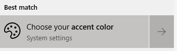
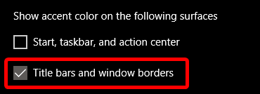

A Java Look & Feel affects the colors/style (look) of the entire program as well as some of the behavior/shortcuts (feel). Various different Look & Feel can be selected in the Settings under "Look" (additional chat-specific customization is possible on some subpages such as "Chat Colors" or "Font").
Note: Changing Look & Feel properties can cause some slight GUI issues, so a restart of Chatty is recommended to complete your changes.
Some Look & Feel will not provide a styled window, but will instead let the current window manager provide the titlebar/frame of the window. Using the native style window has the advantage that features such as window snapping and window management may work better.
For Look & Feel other than "Default" and "System", you have to enable
the native window setting under "Look" (or /set lafNativeWindow on)
in order to use the native window. Restart Chatty after changing.
The colors of the native window may depend on the OS.
The native window color in Windows 10 may be just white, even in dark mode, unless you change some settings.
Open your start menu and search for "accent color", select "Choose your accent color".
Tick the "Title bars and window borders" option at the bottom.
This will apply the accent color only for active windows. You can set the inactive window color through the registry, for example by downloading and executing one of the following files: Blue/Gray or Dark/Dark (These set both the active and inactive color, although it seems the active one may be overwritten by the regular accent color setting, so you may need to set that one normally.)
Log out of Windows and back in (or restart) in case the colors don't immediately apply.
The JTattoo Look & Feel (HiFi, Noire, Minte, Graphite, Aero, Fast, Luna) allow you to use these properties, which overwrite their default values. There are also a few properties that can have an effect in every Look & Feel. They can be changed using setting commands:
/set lafCustomTheme <property> <value> - set one property value/remove lafCustomTheme <property> - remove one property/clearSetting lafCustomTheme - remove all propertiesTip: Enter /set lafc + TAB to
autocomplete setting name.
The following list may not contain all properties. Some more may be listed here, although that list is likely also not complete. Chatty also has some new properties added.
Not all properties work the same for all Look & Feel and the documentation on that isn't complete, so you'll just have to try around a bit.
/set lafCustomTheme selectionBackgroundColorLight 255 60 0[Light/Dark] have a top and bottom
color for gradients. For example for buttonColor[Light/Dark]
you can set both buttonColorLight and
buttonColorDark (to the same if you don't want a gradient).on/off are enabled when set to
on and disabled otherwise on any other value| Window Properties | |||
|---|---|---|---|
| windowTitleForegroundColor | text | Active window title | |
| windowTitleBackgroundColor | bg | Fast only? | |
| windowTitleColor[Light/Dark] | bg | Active window title/Dark for window frame | |
| windowInactiveTitleForegroundColor | text | Inactive window title | |
| windowInactiveTitleBackgroundColor | bg | Fast only? | |
| windowInactiveTitleColor[Light/Dark] | bg | Inactive window title/Dark for window frame | |
| windowIconColor | fg | Window icons (minimize/close/..) | |
| windowIconShadowColor | fg | ^ Shadow | |
| windowIconRolloverColor | fg | ^ Mouseover | |
| windowBorderColor | border | Outer (active) window border | |
| windowInactiveBorderColor | border | Outer (inactive) window border | |
| windowInnerBorderColor | border | Inner (active) window border, defaults to windowTitleColorDark | HiFi/Noire only |
| windowInactiveInnerBorderColor | border | Inner (inactive) window border, defaults to windowInactiveTitleColorDark | HiFi/Noire only |
| General Properties | |||
| foregroundColor | text | Most text | |
| backgroundColor | bg | Many backgrounds | |
| frameColor | fg | Some frames around GUI elements (like scrollpane, edit box) | |
| frameColor2 | fg | ^ Secondary color (bottom/right), if applicable | |
| controlForegroundColor | fg | Various GUI elements (e.g. tabs) | |
| controlColor[Light/Dark] | bg | ^ | |
| controlHighlightColor | fg | Table header? | |
| controlShadowColor | fg | Table header? | |
| controlDarkShadowColor | fg | Tabs Shadow/outline | |
| inactiveColor[Light/Dark] | bg | ^ When inactive window | |
| disabledBackgroundColor | bg | For disabled GUI elements ("greyed out") | |
| disabledForegrundColor | text | ^ | |
| focusColor | fg | Focused GUI element dashed line (like button) | |
| focusCellColor | fg | Focused Tree item border | |
| gridColor | fg | Table grid | |
| tabSelectionForegroundColor | text | Selected tab | |
| textShadow | fg | on/off | |
| Menu Properties | |||
| menuForegroundColor | text | Menu/Context Menu | |
| menuBackgroundColor | bg | ^ | |
| menuColor[Light/Dark] | bg | Not for HiFi/Noire | |
| menuSelectionForegroundColor | text | Menu/Context Menu mouseover | |
| menuSelectionBackgroundColor | bg | ^ | |
| menuSelectionBackgroundColor[Light/Dark] | bg | Graphite | |
| Button Properties | |||
| buttonForegroundColor | text | Button | |
| buttonColor[Light/Dark] | bg | Button | |
| rolloverForegroundColor | text | Button/Tab mouseover | HiFi/Noire not for Tab |
| rolloverColor[Light/Dark] | bg | Button/Tab mouseover | |
| pressedForegroundColor | text | Button pressed | |
| pressedBackgroundColor[Light/Dark] | bg | Button pressed | |
| Input Properties | |||
| inputForegroundColor | text | Input like textfields, comboboxes, lists.. | |
| inputBackgroundColor | bg | ^ | |
| selectionForegroundColor | text | Selected text/list entries | |
| selectionBackgroundColor | bg | ^ | |
| selectionBackgroundColor[Light/Dark] | bg | Selected tab | |
| (Note: The chat inputbox colors are changed in the "Chat Colors" settings) | |||
| Tooltip Properties | |||
| tooltipForegroundColor | text | Tooltips | |
| tooltipBackgroundColor | bg | ^ | |
| tooltipShadowSize | number | ||
| tooltipCastShadow | on/off | ||
| tooltipBorderSize | number | ||
| Other Properties | |||
| windowDecoration | When set to "off" it disables the custom styled windows and uses native windows instead, on/off | ||
| macStyleWindowDecoration | on/off | ||
| macStyleScrollBar | More minimalistic scrollbar, on/off | ||
| linuxStyleScrollBar | on/off | ||
| centerWindowTitle | on/off | ||
| menuOpaque | Non-transparent menus, on/off | ||
| tabSeparatorStyle | Style of the separator between the tabs and content, a single number (0-8, 0 default) | HiFi/Noire only | |
| drawSquareButtons | Don't draw rounded buttons | Not all LaF | |
| flatColors | Use some inactive window colors for the Noir Look&Feel, on/off | ||
| provideErrorFeedback | When set to "off" it won't play an error sound for some invalid actions (e.g. backspacing on an empty input field), on/off | ||
| Chatty Properties (any Look & Feel) | |||
| cTabForegroundHighlight | text | Tab color when a message was highlighted in the channel | |
| cTabForegroundUnread | text | Tab color when messages have been received since last having it open | |
| cInputBorder | border | The border around the chat inputbox (e.g. border(1,255 0 0)
for a red border) |
|
| Not used in Chatty or not sure what it is | |||
| tabAreaBackgroundColor | |||
| toolbarForegroundColor | |||
| toolbarBackgroundColor | |||
| toolbarColorLight | |||
| toolbarColorDark | |||
| desktopColor | |||